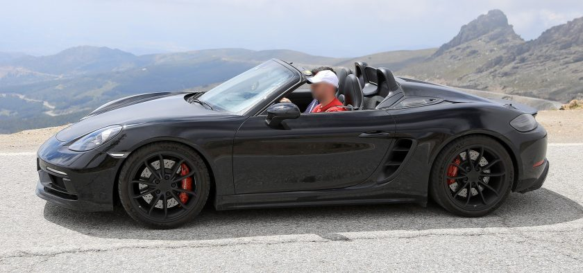
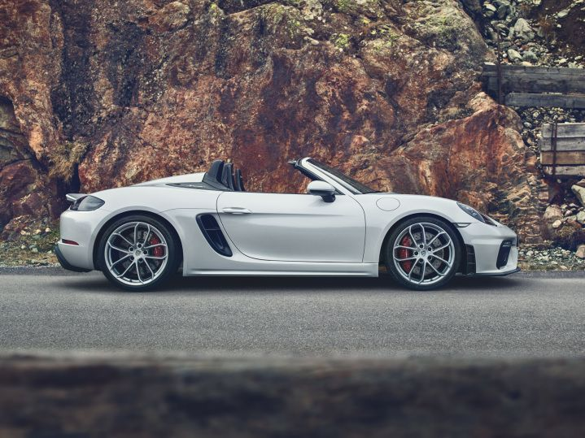

La 718 T sera particulièrement à l’aise sur les routes de campagne sinueuses, offrant comme but ultime, le plaisir d’une conduite dynamique ! Ces modèles 718 T vous permet la découverte de ces plaisirs en réduisant au maximum le superflux !Nous y retrouvons ainsi de série :des poignées de porte rouge insérés dans les panneaux de porte noirs et des sièges sport à réglage électrique bidirectionnel, avec des sections centrales noires en Sport-Tex et paré d’un magnifique logo « 718 » brodé sur les appuie-têtes ! d’un grand compartiment de rangement remplaçant le module PCM (Porsche Communication Management).La 718 T est souligné par de nombreuses touches résolument sportives : le pilote disposera d’un volant Sport GT de 360 mm avec sélecteur de mode pourvu d’un rembourrage plutôt luxueux et un revêtement en cuir lui offrant une adhérence optimale en conduite sportive.En ce qui concerne les couleurs extérieures, les acheteurs peuvent choisir entre le noir, le rouge indien, le jaune racing et le blanc, ainsi que les couleurs métallisées blanc Carrara, Deep Black et GT Silver. Porsche propose également des couleurs spéciales Lava Orange et le très apprécié Bleu Miami.Une particularité de ce modèle est son montage dynamique de boîte de vitesses , le système PADM, qui minimise les vibrations dans la zone moteur / boîte de vitesses et réduit les mouvements qui pourraient affecter la dynamique de conduite du fait de la masse totale de la transmission. Cela combine les avantages des supports de boîte de vitesses rigides et souples: le comportement de conduite devient nettement plus précis et stable pendant les changements de charge et dans les courbes rapides. Le confort de conduite n’est jamais affecté sur routes accidentées.Le pack Sport Chrono, inclus de série pour ces 718 T, offre des modes de conduite Normal, Sport, Sport Plus et Individuel, qui peuvent être sélectionnés à l’aide du sélecteur de mode situé sur le volant Sport GT. Sport et Sport Plus activent des caractéristiques plus sportives à la fois dans le système de gestion du régime moteur et au niveau de l’accélérateur, avec la fonction de double embrayage automatique qui vous aide à passer à la vitesse supérieure avec la boîte de vitesses manuelle. Sport Plus affine encore le comportement de la 718 T en garantissant une configuration plus sportive du système de positionnement adaptatif de la carrosserie Porsche Active Suspension Management (PASM), du système de guidage actif du moteur (PADM) et de la transmission optionnelle à double embrayage Porsche. En combinaison avec PDK, la fonction Launch Control et le bouton Sport Response au centre du commutateur de mode sont également disponibles."911andco.fr"
  Les sources: "automobile-magazine.fr" "porscherivesud.com"